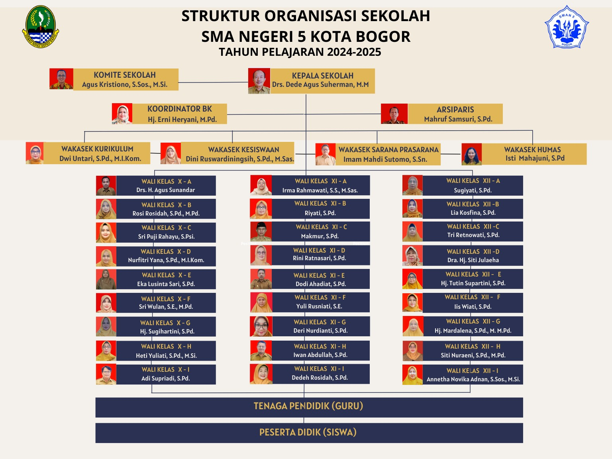
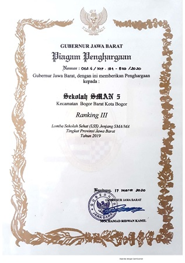

Selamat Datang di SMA Negeri 5 Bogor
SMA Negeri 5 Bogor hadir sebagai sekolah unggul yang mendorong prestasi, kreativitas, kedisiplinan, dan perkembangan potensi setiap peserta didik.
.jpg)
Profil Sekolah
SMA Negeri 5 Bogor (SMANLI) berkomitmen mengembangkan potensi peserta didik
secara holistik melalui pendidikan yang
berkarakter, kreatif, serta menonjolkan
prestasi olahraga yang kompetitif. Keunggulan non-akademik sekolah ini paling
bersinar
melalui tim basket Fivers, raksasa basket sekolah di Bogor yang secara
konsisten mendominasi turnamen bergengsi, bahkan sukses
menembus babak final party
dan meraih gelar juara (champion) di ajang Honda DBL West Java-West. Didukung penuh
oleh ekosistem
sekolah dan militansi suporter kreatifnya, SMAN 5 Bogor terbukti berhasil
membangun mentalitas juara, ketangguhan, serta sportivitas
tinggi dalam mencetak lulusan yang
inovatif dan siap menghadapi tantangan masa depan.
Struktur Organisasi
| No | Nama | Jabatan |
|---|---|---|
| 1 | Hj. Enung Nuripah, S.Pd., M.Pd | Kepala Sekolah |
| 2 | Dwi Untari, S.Pd. | Wakil Kepala Sekolah Bidang Kurikulum |
| 3 | Dini Ruswardiningsih, S.Pd., M.Sas. | Wakil Kepala Sekolah Bidang Kesiswaan |
| 4 | Imam Mahdi Sutomo, S.Sn. | Wakil Kepala Sekolah Bidang Sarana dan Prasarana |
| 5 | Isti Mahajuni, S.Pd. | Wakil Kepala Sekolah Bidang Humas |

Fasilitas
- Ruang Kelas
- Laboratorium
- Lapangan Olahraga
- Perpustakaan
- Sarana Ibadah
- Ruang Organisasi & Kesehatan
- Fasilitas Pendukung Lainnya
Ekstrakurikuler
- Paskibra
- Pramuka
- PMR
- Basket dan Futsal
- Volly dan Bulu Tangkis
- Bela Diri
- Fotografi dan Videografi
- Paduan Suara dan Musik Band
- Seni Tari
- Teater / Seni Peran
- Rohis
- Karya Ilmiah Remaja (KIR) / Olimpiade
- Klub Bahasa & Budaya
Prestasi Sekolah
| No | Prestasi | Tingkat | Tahun | Foto |
|---|---|---|---|---|
| 1 | Juara 1 Honda DBL West Java Series | Kota Bogor | 2023 | .jpg) |
| 2 | Juara 1 Lomba Sekolah Sehat Berkarakter | Kota Bogor | 2019 |  |
| 3 | Juara 3 Lomba Sekolah Sehat (LSS) Jenjang SMA/MA | Jawa Barat | 2019 |  |
Lokasi Sekolah
Alamat Sekolah : Jl. Manunggal No. 22, Bogor Barat, Kota Bogor, Jawa Barat 16111
Kontak Kami
Email: sman5@sman5kotabogor.sch.id
Telepon: 0251-8325688